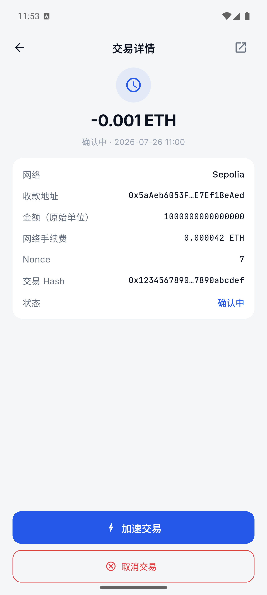
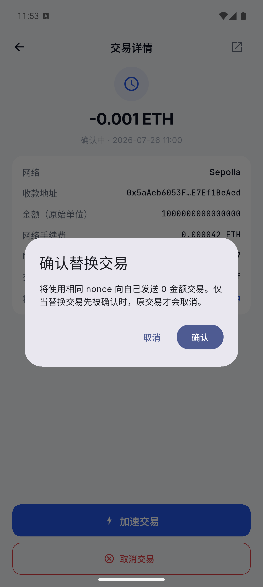
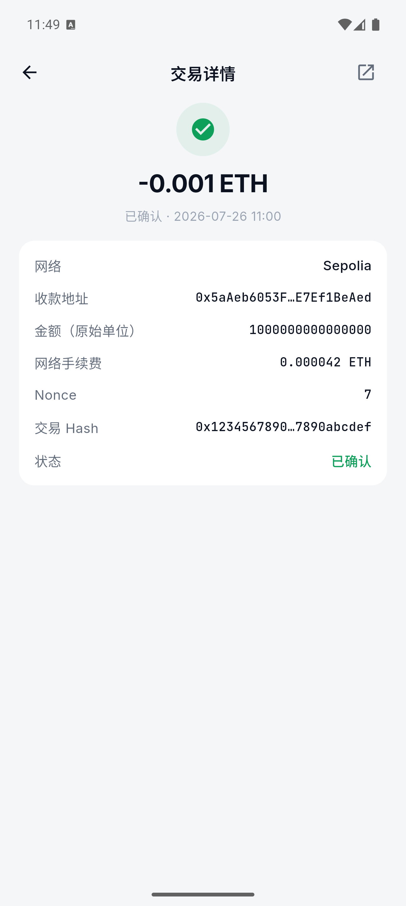
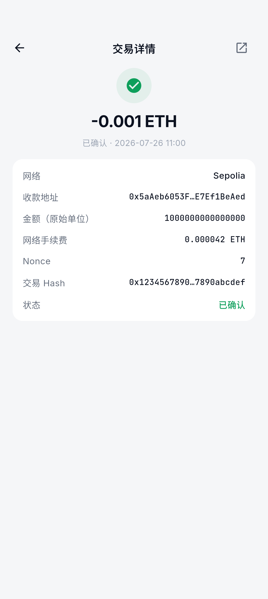
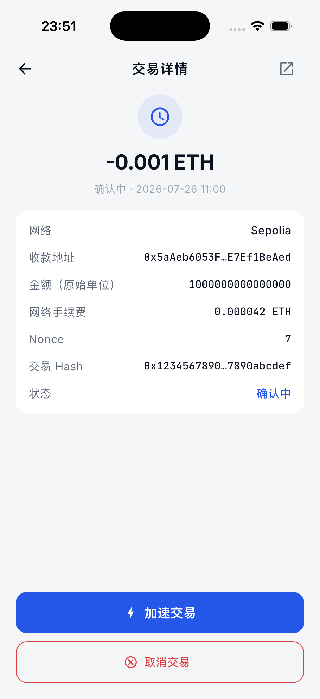
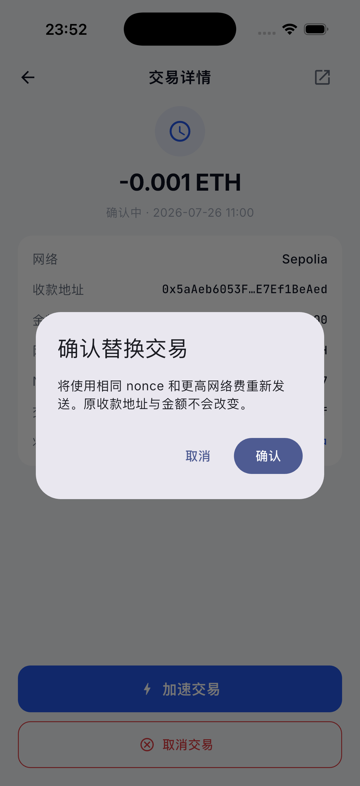
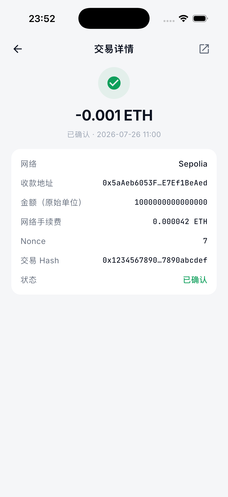
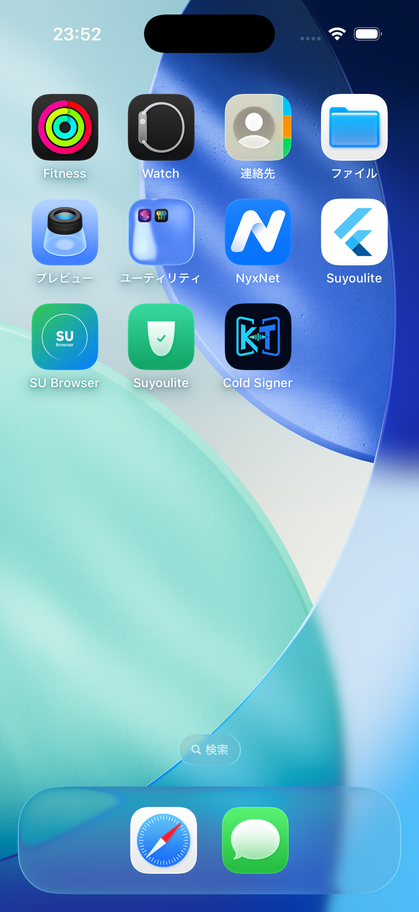

KT WALLET · ANDROID 15 + IOS 26.2 · 2026-07-26
Pending 交易
加速 / 取消 UI 验收
同一套集成 UI 用例在 Android API 35 模拟器与 iPhone 17 Pro Simulator 上执行。覆盖 Pending 详情、加速确认、取消确认、已确认状态保护及参数缺失保护。
2 / 2
模拟器平台通过
5 / 5
关键 UI 状态通过
1
UI 问题发现并修复
结论
Android 15 / API 35
通过系统截图与设备内 Flutter 帧截图均完成；测试进程正常退出。
iPhone 17 Pro / iOS 26.2
通过详情页和两个确认弹窗使用系统 Simulator 截图；五项语义断言全部通过。
金额显示
已修复首轮发现主金额直接显示 wei；已改为 -0.001 ETH，原始单位继续保留在详情卡片中。
逐项验收
| 步骤 | 预期 | Android | iOS |
|---|---|---|---|
| Pending 交易详情 | 显示可读金额、Sepolia、原始金额、动态最高费、nonce、hash、状态，并出现“加速交易 / 取消交易”。 | 通过 | 通过 |
| 加速确认 | 明确说明复用相同 nonce、提高网络费，收款地址与金额不改变；用户可取消。 | 通过 | 通过 |
| 取消确认 | 明确说明向本人发送 0 金额，并提示仅当 replacement 先确认时原交易才被取消。 | 通过 | 通过 |
| 已确认保护 | 绿色已确认状态；不出现加速和取消按钮。 | 通过 | 通过（语义断言） |
| 参数缺失保护 | nonce/gas/费用参数不完整时保持只读，不出现替换操作。 | 通过 | 通过 |
Android 截图

Pending 详情：金额已经格式化为 -0.001 ETH，底部提供加速与取消。

加速确认：相同 nonce、更高网络费，原交易内容保持不变。

取消确认：0 金额自转，并说明 replacement 的竞争语义。

设备内精确帧：交易已确认后，替换按钮完全移除。
参数缺失时仍可查看详情，但没有加速/取消入口。
iOS 截图

iPhone 17 Pro：Pending 详情与两项操作。

iOS 加速确认弹窗。

iOS 取消确认弹窗。

iOS 参数缺失保护：替换操作隐藏。
自动化证据
| Android 集成 UI | flutter test integration_test/pending_replacement_ui_capture_test.dart -d emulator-5554 | 通过 |
| iOS 集成 UI | flutter test integration_test/pending_replacement_ui_capture_test.dart -d F0116D5A-26A6-4748-A985-0A99B5544777 | 通过 |
| Widget UI | Pending 操作、终态保护、缺参数保护、replacement lineage | 4 项通过 |
| Service | 原生币加速、ERC-20 加速、取消交易、nonce 已消费拒绝 | 4 项通过 |
测试边界：本报告证明 UI、参数门禁和替换交易构造逻辑在两端通过；没有制造真实测试网低费率 Pending，因此不把它写成真实 replacement 链上广播成功。真实链上验收仍需 original/replacement txHash 和浏览器回执。